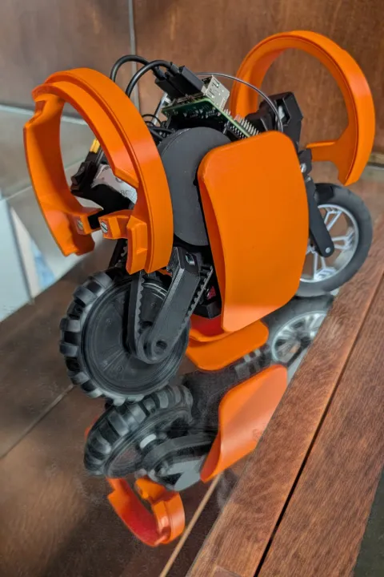

The rear wheel is an active omni wheel, taken from a toy motorbike. Two servos drive it as a differential: turned together the wheel rolls, turned against each other it drives sideways, and standing still the bike balances using that sideways drive. A third servo steers, and a fourth swings a pair of panels that lay the bike down and lift it back up when it falls. An orientation sensor (AHRS) tells it which way is up.
One reinforcement-learning policy does all of the driving: it balances the bike and follows a speed and heading command, 50 times a second. It is a small recurrent network, trained in MuJoCo against a model of the bike built from measured parameters, and the same control policy weights run on the bike's onboard computer and in the simulated test drive.